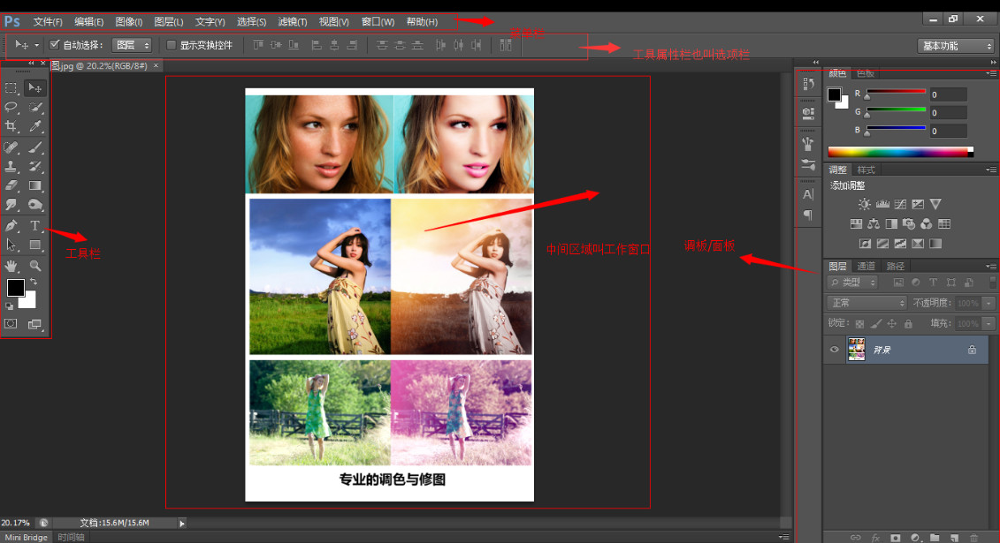
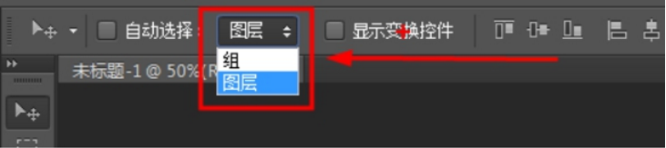
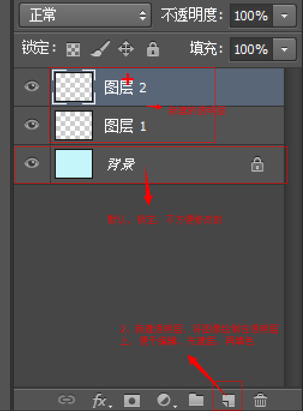
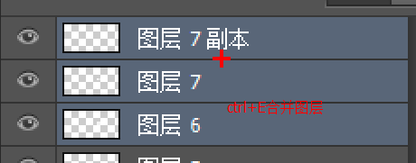
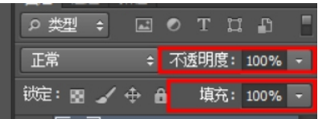
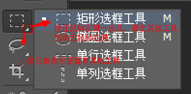
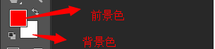
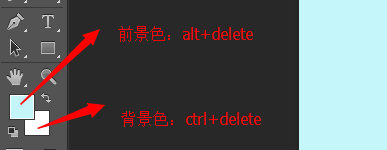
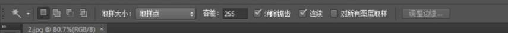
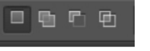

学习PS
任务目标：为符合代码的实现，可以对UI美工的效果图进行简单地抠图个修改并熟练地切图！（重点是熟练切图）

准备工作（界面设置）
新建设置
新建：Ctrl+N


1、宽度设为版心宽度即可！高度一般不确定！
分辨率不能调！
背景内容：透明！
存储为预设方便调用：再次新建时，找到“预设”就可以按照我们原来的预设尺寸来新建图层。
2、关闭文档 CTRL+W
3、存储 Ctrl+S
存储为 Ctrl+Shift+S 另存一份文件
4、格式：
.psd PS源文件格式 图层、文字、样式等，可再次编辑 （给自己）
.jpg 有损压缩格式 （给网上客户） 品质 最高12
5、打开文件： 1、文件下拉菜单-打开（快捷键：Ctrl+O） 2、双击软件空白处也能打开
移动工具设置
快捷键：V
可以不使用自动选择，按住Ctrl+鼠标左键单击效果图的图层——选中图层，就可以随意拖动图层了！

视图菜单设置
打开智能参考线和标尺


窗口菜单设置
关闭库和颜色

打开信息和字符

关闭段落

面板设置
关闭通道和路径


打开历史记录拖到面板


关闭属性选项卡组


将信息和字符两个选项卡组拖到面板上方


打开信息的面板选项，第一颜色信息和第二颜色信息更改为RGB颜色，鼠标标尺单位为像素，然后勾选文档尺寸，确定即可。


显示文档的宽高

信息面板的X、Y坐标有助于写绝对定位和相对定位，W、H显示选区宽高

编辑菜单设置


显示文字像素

最后，窗口菜单设置

保存所有更改的设置，以防万一被复位。


移动工具
移动工具V选择组或图层时，需设置选项栏


移动选区或图像时：
水平、垂直或45度移动过程中，不释放鼠标，一直按住Shift，可保持同一水平直线、同一垂直线、45度移动。
图层操作(重点)
ps中的撤销操作是：
ctrl+z 撤销一步
ctrl+alt+z 撤销多步（可以一直撤销）
放大缩小图片：Ctrl + 放大 Ctrl - 缩小
打开图层面板的快捷键：F7
其实图层就是一层层透明的玻璃 可以实现叠加问题。

创建图层

删除图层

单击图层名进行重命名

选择图层
1、按住Ctrl键在目标图像上单击。
2、将光标放置在目标图像上右键，选择图层名称。
3、在图层面板按Ctrl键或Shift键单选图层或多选图层。


（移动工具状态下）复制图层：
选中目标图层后
1、按Alt拖拽图像
2、Ctrl+J （重合）拖拽图像

图层编组
组就是放置多个图层的文件夹
图层编组：选中目标图层，Ctrl+G


取消编组：CTRL+SHIFT+G
双击组名称，可命名组
图层上下位置移动
1、选中目标图层，在图层面拖拽
2、CTRL+] 向上移动图层 CTRL+[ 向下移动图层
3、CTRL+SHIFT+] 图层置顶 CTRL+SHIFT+[ 图层置底
图层合并
Ctrl+E 可以合并图层
当图层做好时，每一小部分的图层合并成一个大件的图层。例如



图层透明度
不透明度：
设置图层的不透明程度 0%完全透明，不可见
100%完全不透明，真实可见
填充：
与不透明度效果类似


键盘数字键可快速设置透明度数值，例如：40%->30%
抠图
矩形选区工具 M
用来选择某部分区域 我们成为选区工具
左键选择工具，右键点击弹出选框扩展工具

取消选区： Ctrl+D


Ctrl+J


按住Shift画正圆或者画正方形，按住Shift+Alt以圆心画正圆或者画正方形
Ctrl+D 取消选区，确认操作。
删除选区图：框选Delete删除
案例
颜色填充


每画一部分图就要新建图层或者按住Alt拷贝出新图层

套索工具 L
1、套索工具 在屏幕上拖拽鼠标左键，释放后自由生成选区
2、多边形套索 连续单击绘制多边形选区
3、磁性套索工具 单击颜色交界后，沿交界线用鼠标划动或者自己单击选择点，可生成选区。大小写键：CapsLK 可控制光标精确状态。
闭合方法：1、单击起始点 2、双击任意位置。
删除方法：Delete删除当前点，Esc删除全部点。
按住空格键拖动观察图片。
魔棒工具 W
以单击位置为选择色，选择相似颜色生成选区。

容差：颜色的差距——选择颜色的范围多少 容差小，选的背景范围小。 0-255
连续：勾选连续时，相连颜色生成选区。不勾选，画面中所有相似颜色被选中生成选区。

选区反选：Ctrl+Shift+I

快速选择工具
魔棒工具适合抠背景颜色单一的图
快速选择工具适合抠背景复杂但主题和背景有明显差别
选区布尔运算

选区面积大小的变化。
新选区：保持选中状态
添加到选区：相加运算（按住Shift再绘制选区）
从选区减去：相减（按住Alt再绘制选区）
与选区交叉：重合部分保留。（按住Alt+Shift再绘制选区）
都可以与魔棒工具一起使用

梦幻星球案例
先把恐龙弄透明，再用套索工具框选前面的灌木丛，恐龙恢复100%不透明，再回到恐龙图层Delte即可，完成恐龙半身嵌进灌木丛的效果。
钢笔工具： P
作用：绘制路径，生成选区，抠图。
组成：路径线和锚点
路径类型：
直线型路径：连续单击。
曲线型路径：第一点单击，第二点不松开鼠标拖动。
取消曲线：按住Alt键单击第一点重新取样，点击第二点。
绘制路径后，Ctrl+回车，生成选区。
利用矩形选框简单形成酒瓶的倒影
改变两根橄榄枝的颜色
利用魔棒工具选出两个橄榄枝


文字和吸管工具
文字工具

写完文字后要再选一次文字工具才能修改

属性栏修改字体大小和颜色等

吸管工具
用于选取前景的颜色（用于CSS的颜色值）


切图


1、手动切片

单击选中的切片


2、新建基于图层的切片

图层菜单——可以新建多个基于图层的切片


左键单击一个，再按住Shift可以多选选中的切片。


缺点：有可能会把不需要的多余部分切出来

清除切片和参考线
视图菜单——清除切片和参考线


3、基于参考线的切片
标尺：Ctrl+R
便于切图：视图——显示——网格
在上方和左方的标尺中拖出参考线框选切片！哪里来回哪里去——删除参考线！右键删除切片！

切片工具属性栏——基于参考线的切片


4、切片——划分等分数法
缺点：切图会有偏差，适用于设计精准（1px都不差）的图片
先选一整个切片

切片选择工具划分等分数的切片


5、cutterman插件切图


左键单击选中图层，可Shift多选导出切图或选区工具导出

导出选中图层时可以选择固定宽高
标尺工具

用于测量，点击其他工具取消
图层复制CSS
1、选中对应图层
2、图层菜单——复制CSS
3、在文件中Ctrl+V，就可以看到对应的CSS内容
如何仿网站：
PNG等图片切图
网页截图后


企业中的切图：